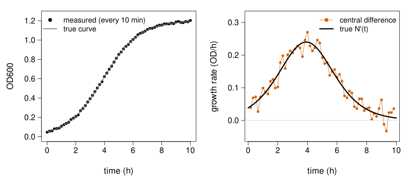
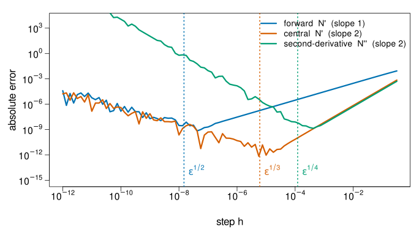
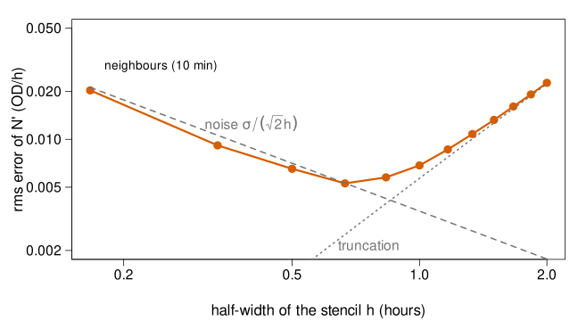
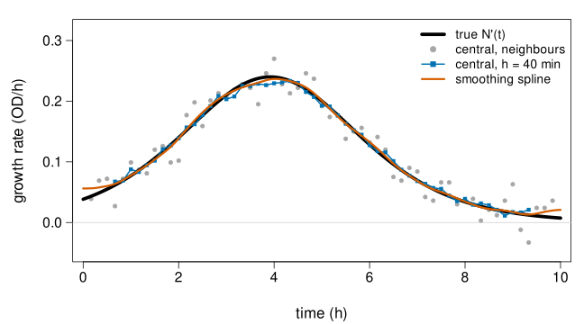

Part 7 — Numerical differentiation and integration
Numerical analysis for biologists
About this lecture
A derivative is a rate: how fast a culture grows, how fast a drug is cleared, how steeply a log-likelihood rises. A computer only has function values, so it estimates the rate from a few nearby values.
Stencils from Taylor: forward, backward and central differences, a one-sided formula for the ends of a data set, and the second derivative.
The best step for each: \varepsilon^{1/2}, \varepsilon^{1/3}, \varepsilon^{1/4}, and why.
Richardson extrapolation: combine two poor estimates into a good one (what numDeriv::grad does).
Measured data: differentiating amplifies noise. Widen the stencil or smooth first.
Gradients for fitting by finite differences, how they fail inside optim, and the alternatives: the complex step and automatic differentiation.
Biology: the instantaneous growth rate from a noisy plate-reader OD curve; the gradient of a log-likelihood when fitting the growth curve.
Recap: the V from Convergence and cost
Logistic OD curve N(t) = \dfrac{K}{1 + (K/N_0 - 1)\,e^{-rt}}, K = 1.2, N_0 = 0.05, r = 0.8 per hour. True growth rate at t = 3 h: N'(3) = 0.21026 OD/h.
Forward difference\dfrac{N(t+h) - N(t)}{h}: truncation error \tfrac{h}{2}N'', order 1.
Rounding error\approx \varepsilon|N|/h: the two values agree in almost all digits, and dividing by a small h blows up their rounding.
Total error: a V on log–log axes, best h \approx \sqrt{\varepsilon} \approx 10^{-8}, best error \approx 10^{-8}: half the digits lost.
The central difference\dfrac{N(t+h) - N(t-h)}{2h} had slope 2 and a deeper V.
The ratio check \dfrac{D(h) - D(h/2)}{D(h/2) - D(h/4)} \approx 2^p tells truncation regime from rounding regime without the exact answer.
Today: where these formulas come from, how to build any formula you need, and what changes when N is measured, not computed.
The problem: growth rate from a plate reader
A plate reader measures OD600 every 10 minutes for 10 hours (61 values, 3 decimals, noise sd \approx 0.005). We want the growth rate N'(t) and its maximum.

The curve looks clean. Its central differences do not: they jump by \pm 0.03, and one is negative, a culture “shrinking” in mid-growth.
Taylor, three times
Write the neighbours of t as Taylor series around t (prime = derivative at t):
\begin{aligned}
N(t+h) &= N + h N' + \tfrac{h^2}{2} N'' + \tfrac{h^3}{6} N''' + \tfrac{h^4}{24} N'''' + \dots \\
N(t-h) &= N - h N' + \tfrac{h^2}{2} N'' - \tfrac{h^3}{6} N''' + \tfrac{h^4}{24} N'''' - \dots \\
N(t+2h) &= N + 2h N' + \tfrac{4h^2}{2} N'' + \tfrac{8h^3}{6} N''' + \dots
\end{aligned}
For the OD curve at t = 3:
N
N'
N''
N'''
N''''
0.38879
0.21026
0.05921
-0.04227
-0.06170
Recipe: add multiples of these rows so that everything cancels except the derivative you want. What is left over is the error.
Forward and backward differences
Forward: take row 1, subtract N, divide by h: \frac{N(t+h) - N(t)}{h} = N' + \underbrace{\tfrac{h}{2} N''}_{\text{error}} + O(h^2)
Backward: take row 2, the same way: \frac{N(t) - N(t-h)}{h} = N' - \tfrac{h}{2} N'' + O(h^2)
Both are first order. At t = 3: error \approx \pm 0.0296\,h; with h = 0.1 h, +0.0029 and -0.0030.
The errors have opposite signs: forward overestimates, backward underestimates (the curve bends upwards at t = 3).
Use: the backward difference needs only past values, the forward only future ones. At the last measurement of a time course, backward is all you have.
Central difference: let the errors cancel
Subtract row 2 from row 1: the even terms (N, N'', N'''') cancel. N(t+h) - N(t-h) = 2hN' + \tfrac{2h^3}{6} N''' + \dots
\quad\Longrightarrow\quad
\frac{N(t+h) - N(t-h)}{2h} = N' + \underbrace{\tfrac{h^2}{6} N'''}_{\text{error}} + O(h^4)
Second order: halving h quarters the error. At t = 3: error \approx -0.00705\,h^2, so -7.0\times10^{-5} at h = 0.1, forty times smaller than forward.
Same cost as forward (two evaluations), if N(t) is not needed anyway.
It is the average of forward and backward; their \pm\tfrac{h}{2}N'' errors cancel.
It needs a point on each side: not available at the first and last time point.
Any stencil you need: match Taylor terms
At the first time point there is no t - h. Look for weights w_0, w_1, w_2 with w_0 N(t) + w_1 N(t+h) + w_2 N(t+2h) \approx h\,N'(t). Matching the N, hN' and h^2N'' terms of the Taylor rows gives a 3\times3 linear system:
s <-c(0, 1, 2) # offsets: t, t+h, t+2hA <-outer(0:2, s, function(k, s) s^k /factorial(k)) # row k: Taylor term ksolve(A, c(0, 1, 0)) # want: 0 N + 1 hN' + 0 h^2 N''# [1] -1.5 2.0 -0.5
So N'(t) \approx \dfrac{-3N(t) + 4N(t+h) - N(t+2h)}{2h}, error -\tfrac{h^2}{3}N''': second order with one-sided data.
Same method with offsets (-1, 0, 1) and right-hand side (0, 0, 1) gives the second derivative.
np.gradient uses central differences inside and (with edge_order=2) this formula at the ends.
Second order. At t = 3: error \approx -0.00514\,h^2.
Biology: N'' is the acceleration of growth. It changes sign at the inflection point, the time of fastest growth (t = 3.92 h here).
This (1, -2, 1)/h^2 stencil is the workhorse of Part 10: in space it becomes the diffusion term D\,\partial^2 c/\partial x^2, in The diffusion (heat) equation by finite differences.
Ratios \approx 2 (first order) and \approx 4 (second order), as the Taylor errors predicted.
The errors themselves: 0.00289, -0.00303, -7.04\times10^{-5}, -5.14\times10^{-5} at h = 0.1: the leading terms \pm0.0296h, -0.00705h^2, -0.00514h^2.
Each stencil has its own V

Rounding hits the second derivative hardest: it divides by h^2, not h. Its V is shifted far to the right.
The best step: balance the two errors
Truncation \approx C h^p, rounding \approx \varepsilon |N| / h^k for the k-th derivative. Setting them equal: h^* \approx \varepsilon^{1/(p+k)}, \qquad \text{best error} \approx \varepsilon^{p/(p+k)} \qquad (\text{if } C \text{ and } |N| \text{ are of order } 1).
formula
p
k
h^*
best error
digits kept
forward / backward
1
1
\varepsilon^{1/2} \approx 1.5\times10^{-8}
\approx 10^{-8}
8
central
2
1
\varepsilon^{1/3} \approx 6\times10^{-6}
\approx 10^{-11}
11
second derivative
2
2
\varepsilon^{1/4} \approx 1.2\times10^{-4}
\approx 10^{-8}
8
Higher order and a larger step: the central difference wins twice.
Steps are relative: use h = \varepsilon^{1/3}\max(|t|, 1). Time in seconds (t = 10\,800 s) or a rate constant of size 10^{-4} needs a step scaled to it.
At h = 10^{-8}, the step that is best for the forward difference, the curvature is -0.56: ten times too large, with the wrong sign. “Growth is slowing down”, confidently and falsely.
Check: vary h by factors of 10. The answer must stay put over a range of h; if it drifts or changes sign, you are in the rounding regime.
Richardson extrapolation
The central difference has an error made of even powers only: D(h) = N' + c_2 h^2 + c_4 h^4 + \dots, \qquad D(h/2) = N' + \tfrac{c_2}{4} h^2 + \tfrac{c_4}{16} h^4 + \dots Take 4 D(h/2) - D(h): the h^2 term cancels. Divide by 3: R(h) = \frac{4 D(h/2) - D(h)}{3} = N' + O(h^4).
grad takes central differences at a relative step h = 10^{-4}|x| and at h/2, h/4, h/8 (8 evaluations of f per variable) and runs the Richardson table: 12–13 correct digits.
method = "simple": one forward difference with h = 10^{-4}, error \approx 0.0296 \times 10^{-4}.
When Richardson fails: if f is not smooth (an if, abs, interpolated data, an adaptive ODE solver), or noisy, the error is not c_2h^2 + \dots and the extrapolation can make it worse.
Measured data: the noise replaces \varepsilon
Each measurement is y_i = N(t_i) + e_i, noise sd \sigma = 0.005. The central difference of the noise has sd \frac{\sqrt{2}\,\sigma}{2\,\Delta t} = \frac{\sigma}{\sqrt2\,\Delta t} = \frac{0.005}{\sqrt2 \cdot \tfrac16} = 0.021 \text{ OD/h}.
The same \varepsilon/h term as before, with \varepsilon|N| \approx 10^{-16} replaced by \sigma = 5\times10^{-3}: 13 orders of magnitude larger.
Measuring more often makes it worse: every 2 min, the noise in N' is 0.11 OD/h, almost half the peak growth rate.
The V again, with noise
Use a wider central difference: \dfrac{y_{i+k} - y_{i-k}}{2k\,\Delta t}, half-width h = k\,\Delta t. Noise \sigma/(\sqrt2 h) falls, truncation \tfrac{h^2}{6}|N'''| grows.

Best near h = 40 min (k = 4): rms error 0.0053, four times smaller than neighbours. Predicted: h^* = \big(3\sigma / (\sqrt2\,|N'''|)\big)^{1/3} \approx 0.5 h.
Smooth first, then differentiate
Fit a smooth curve to all the data, then differentiate the curve. A smoothing spline (Splines, Part 6) picks its smoothness from the data:
fit <-smooth.spline(t, y) # smoothness chosen by GCVd <-predict(fit, t, deriv =1)$y # derivative of the splinesqrt(mean((d -gr(t))^2)) # rms error# [1] 0.004708606c(max(d), t[which.max(d)]) # max growth rate and when# [1] 0.2366499 4.0000000
rms error 0.0047, and a value at every time point, ends included. Maximum growth rate 0.237 OD/h at 4.0 h (true: 0.240 at 3.92 h); raw central differences gave 0.270.
Alternatives: a local polynomial fit (Savitzky–Golay), or fit a growth model and differentiate it (Part 9).
Comparing the three

Raw neighbours (grey): noisy. Wider stencil (blue) and spline (orange): close to the truth, both slightly flatten the peak.
The spline is least reliable at the ends (here 0.056 instead of 0.038 at t = 0).
Check: compute the derivative with two different smoothing levels (stencil widths, spline df). Features that survive both are real; features that move are noise.
Gradients for fitting
Fit (r, K, N_0) to the plate-reader data by maximum likelihood (Gaussian noise, \sigma = 0.005): \ell(r, K, N_0) = -\frac{1}{2\sigma^2}\sum_i \big(y_i - N(t_i; r, K, N_0)\big)^2. The gradient\nabla\ell = (\partial\ell/\partial r, \partial\ell/\partial K, \partial\ell/\partial N_0): one central difference per parameter, nudging only that one.
logistic <-function(t, r, K, N0) K / (1+ (K / N0 -1) *exp(-r * t))loglik <-function(th) -sum((y -logistic(t, th[1], th[2], th[3]))^2) / (2*0.005^2)cen_grad <-function(f, x, h =6e-6) sapply(seq_along(x), function(j) { e <-replace(numeric(length(x)), j, h) # nudge parameter j only (f(x + e) -f(x - e)) / (2* h) })th <-c(r =0.75, K =1.15, N0 =0.06) # a point on the way to the optimumcen_grad(loglik, th)# [1] 42388.45 57583.61 109411.83
Relative error against the analytic gradient: forward (h = 10^{-8}) 10^{-7}–10^{-6}; central 10^{-11}–10^{-7}; numDeriv::grad10^{-12}.
Cost: p + 1 (forward), 2p (central), 8p (numDeriv) evaluations of \ell for p parameters.
Failure: optim’s default gradient
Without a gradient, optim uses central differences with a fixed absolute step ndeps = 1e-3.
fit1 <-optim(th, loglik, method ="BFGS", control =list(fnscale =-1))fit2 <-optim(th, loglik, gr =function(p) grad(loglik, p),method ="BFGS", control =list(fnscale =-1))rbind(default = fit1$par, numDeriv = fit2$par)# r K N0# default 0.7948541 1.202606 0.05085940# numDeriv 0.7954268 1.202457 0.05076077grad(loglik, fit1$par) # should be ~0 at the maximum# [1] 48.205320 7.205445 -8.363963
h = 10^{-3} is 2 % of N_0 = 0.05: at the true maximum the default gradient is still 290 in the N_0 direction. BFGS stops at the wrong place.
Here the error is about \tfrac15 of a standard error. For a parameter of size 10^{-3} (a rate constant in /s) the step is the size of the parameter.
Check: evaluate an accurate gradient at the returned optimum. Fix: pass gr, or set parscale/ndeps to the parameter sizes.
Optional: the complex step
If f is a formula that also works for complex numbers, step in the imaginary direction: f(x + ih) = f(x) + ih f'(x) - \tfrac{h^2}{2}f''(x) - \dots \;\Longrightarrow\; f'(x) = \frac{\operatorname{Im} f(x + ih)}{h} + O(h^2).
Im(od(t0 +1e-20i)) /1e-20- exact # 1e-20i: the complex number 10^-20 i# [1] -2.775558e-17
No subtraction, so no cancellation: h = 10^{-20} is fine, and the result is exact to rounding.
Only for code that accepts complex input: no abs, max, if (x > 0), compiled solvers. One derivative per evaluation.
Automatic differentiation: what Stan, JAX and torch do
A program is a chain of elementary steps (+, \times, exp, …), each with a known derivative. Automatic differentiation (AD) applies the chain rule to the numbers as the program runs.
finite differences
AD
accuracy
half to two-thirds of the digits
exact up to rounding: no h
gradient of p parameters
p+1 to 8p evaluations
reverse mode: about 2–4 evaluations, any p
needs
only f as a black box
code written in an AD-aware library
Forward mode: carry (value, derivative) through every step; one pass per parameter.
Reverse mode (backpropagation): record the steps, then run the chain rule backwards once for the whole gradient.
Stan (gradients for HMC sampling), TMB/RTMB, JAX, PyTorch, Julia. A log-likelihood with 10 000 parameters: AD is the only option.
Checklist: detecting derivative trouble
Value changes when h changes by 10× → rounding regime (too small) or truncation (too large). Find the plateau.
Step not scaled to the variable → use h = \varepsilon^{1/3}\max(|x|, 1) (central), or parscale in optim.
Second derivative with a first-derivative step → use h \approx \varepsilon^{1/4}, never 10^{-8}.
Derivative of measured data → never difference neighbours; widen the stencil or smooth, and compare two smoothing levels.
Negative growth rates mid-growth, spiky curves → noise, not biology.
Optimiser stops with a non-zero gradient → check with numDeriv::grad at the result; supply an analytic or AD gradient.
Hand-written gradient → compare with a finite-difference gradient; agreement to ~10^{-7} relative, not \sim 1.
Function with if, abs, interpolation, or an adaptive ODE solve → not smooth: no Richardson, larger h.
Summary
Stencils from Taylor: forward/backward O(h), central O(h^2), second derivative \tfrac{N(t+h) - 2N(t) + N(t-h)}{h^2}, O(h^2). Any stencil: match Taylor terms with a small linear system.
Best step balances truncation Ch^p against rounding \varepsilon/h^k: \varepsilon^{1/2} (forward), \varepsilon^{1/3} (central), \varepsilon^{1/4} (second derivative). Steps are relative to the variable.
Richardson: \tfrac{4D(h/2) - D(h)}{3} removes the h^2 error; repeated, it gives 12–13 digits (numDeriv::grad). Needs a smooth function.
Measured data: noise \sigma replaces \varepsilon, and \sigma/h is huge. Widen the stencil or smooth first (Splines); check with two smoothing levels.
Gradients for fitting: one difference per parameter; watch the step size relative to each parameter (optim’s ndeps). AD gives exact gradients at the cost of a few evaluations.
Next:Numerical integration, the opposite operation: integrating averages the noise away, and Richardson returns as Romberg.